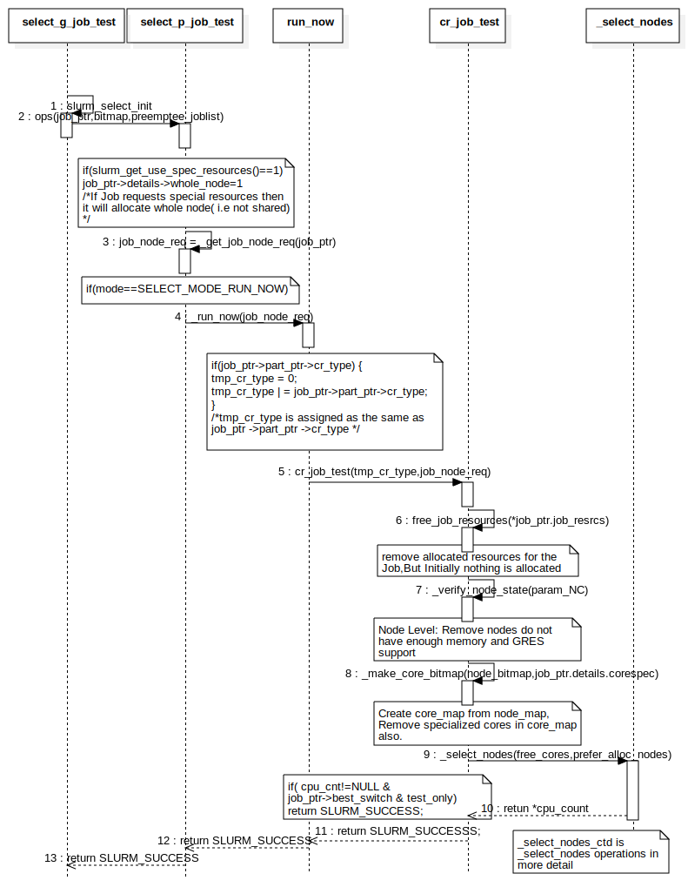
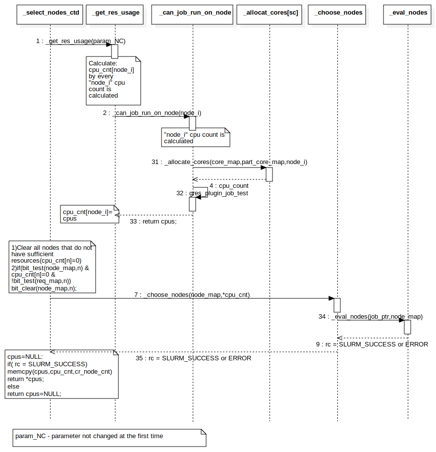
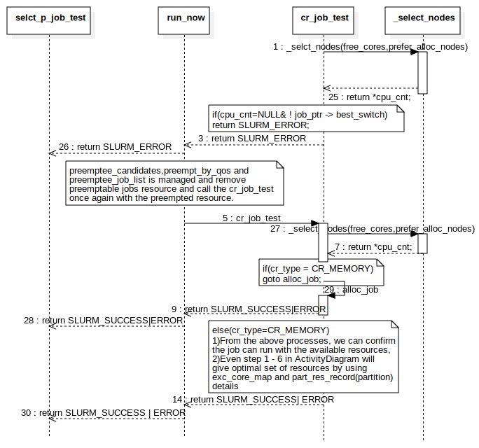

select_consres
UMLInteraction
select_consres
::
select_consres-LV
::
Task Graph
::
select_consres
Description
none
Diagrams

NM-SequenceDiagram

CM-SequenceDiagram

NM-SequenceDiagram-Error
Participants
select_p_job_test
run_now
cr_job_test
_select_nodes
select_g_job_test
_select_nodes_ctd
_get_res_usage
_can_job_run_on_node
_allocat_cores
_choose_nodes
_eval_nodes
selct_p_job_test
run_now
cr_job_test
_select_nodes
Messages
slurm_select_init (select_g_job_test→select_g_job_test)
ops (select_g_job_test→select_p_job_test)
_get_job_node_req (select_p_job_test→select_p_job_test)
_run_now (select_p_job_test→run_now)
cr_job_test (run_now→cr_job_test)
free_job_resources (cr_job_test→cr_job_test)
_verify_node_state (cr_job_test→cr_job_test)
_make_core_bitmap (cr_job_test→cr_job_test)
_select_nodes (cr_job_test→_select_nodes)
retun *cpu_count (_select_nodes→cr_job_test)
return SLURM_SUCCESSS; (cr_job_test→run_now)
return SLURM_SUCCESS (run_now→select_p_job_test)
return SLURM_SUCCESS (select_p_job_test→select_g_job_test)
_selct_nodes (cr_job_test→_select_nodes)
return *cpu_cnt; (_select_nodes→cr_job_test)
return SLURM_ERROR (cr_job_test→run_now)
return SLURM_ERROR (return SLURM_ERROR→selct_p_job_test)
cr_job_test (run_now→cr_job_test)
_select_nodes (cr_job_test→_select_nodes)
return SLURM_SUCCESS|ERROR (cr_job_test→run_now)
return SLURM_SUCCESS|ERROR (run_now→selct_p_job_test)
return SLURM_SUCCESS| ERROR (cr_job_test→run_now)
alloc_job (cr_job_test→cr_job_test)
return *cpu_cnt; (_select_nodes→cr_job_test)
return SLURM_SUCCESS | ERROR (run_now→selct_p_job_test)
_can_job_run_on_node (_get_res_usage→_can_job_run_on_node)
_allocate_cores (_can_job_run_on_node→_allocat_cores)
cpu_count (_allocat_cores→_can_job_run_on_node)
gres_plugin_job_test (_can_job_run_on_node→_can_job_run_on_node)
return cpus; (_can_job_run_on_node→_get_res_usage)
_choose_nodes (_select_nodes_ctd→_choose_nodes)
_eval_nodes (_choose_nodes→_eval_nodes)
SLURM_SUCCESS or ERROR (_eval_nodes→_choose_nodes)
SLURM_SUCCESS or ERROR (_choose_nodes→_select_nodes_ctd)
_get_res_usage (_select_nodes_ctd→_get_res_usage)
Properties
Name
Value
name
select_consres
stereotype
null
visibility
public
isReentrant
true
Owned Elements
NM-SequenceDiagram
CM-SequenceDiagram
NM-SequenceDiagram-Error